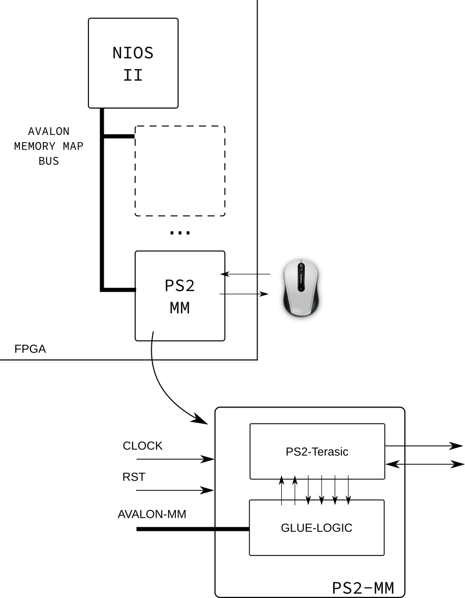
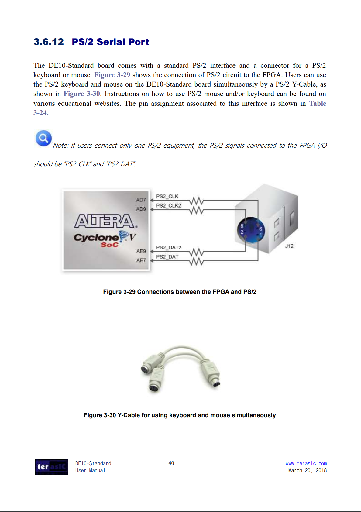

Entrega 3¶
Nessa entrega iremos encapsular um periférico que é responsável pela leitura de um mouse pela interface PS/2 no Plataform Designer (criando um periférico mapeado em memória). Utilizaremos como código padrão o exemplo fornecido pela terasic para essa placa, disponível no CD do kit: Demonstration/FPGA/DE10_Standard_PS2/.
Rubrica:¶
- I
- Não entregou nada
- D
- Entregou somente tutorial
- C
- PS2 mapeado em memória lendo X,Y e click Left
- Funções:
PS2_init()/PS2_halt()/ps_read_clickLeft()
- B
- Aprimorado funções do PS2 +
ps2.ceps2.h
- Aprimorado funções do PS2 +
- A
- PS2 gera interrupção
Hardware¶
O diagrama a seguir é uma visão geral do que deve ser feito, nessa concepção iremos "encapsular" o IP da Terasic em um "periférico mapeado em memória" (PS2-MM), para isso será necessário adicionar uma lógica extra, normalmente chamada de Glue Logic que realiza a interface entre o barramento e o IP.

Periférico Terasic: PS2-Terasic¶
O periférico da Terasic está pode ser encontrado no link a seguir:
O exemplo que é fornecido pela Terasic está em Verilog! mas não é preciso desespero, podemos usar no nosso projeto em VHDL, basta declarar o componente e usar normalmente:
component ps2 is
port(
iSTART : in std_logic; -- press the button for tranxrdb -merge .Xdefaultssmitting instrucions to device;
iRST_n : in std_logic; -- FSM reset signal;
iCLK_50 : in std_logic; -- clock source;
PS2_CLK : inout std_logic; -- ps2_clock signal inout;
PS2_DAT : inout std_logic; -- ps2_data signal inout;
oLEFBUT : out std_logic; -- left button press display;
oRIGBUT : out std_logic; -- right button press display;
oMIDBUT : out std_logic; -- middle button press display;
oX : out std_logic_vector(7 downto 0); -- X axis.
oY : out std_logic_vector(7 downto 0) -- Y axis.
);
end component ps2;
Esse exemplo está também documentando no manual do usuário: DE10-Standard_User_manual.pdf secção: 3.6.12.
Secção: 3.6.12:
Manual do usuário:


Glue Logic¶
A lógica de controle deve interfacear com o periférico da Terasic em todos os sinais de controle (todos menos PS2_CLK/ PS2_DATA/ iCLK_50 / 'iRST_n') de maneira abstrair o acesso mapeado em memória para o periférico. A maneira mais fácil de fazer isso é definindo funcionalidades a endereços do periférico, por exemplo:
| Offset | Funcionalidade | Tipo |
|---|---|---|
| 0 | Controle | R/W |
| 1 | ox | R |
| 2 | oy | R |
| 3 | oLEFTBUT | R |
| ... | ... |
A tabela anterior mapeia para cada endereço do periférico uma funcionalidade diferente, nesse exemplo, se o usuário deseja ler a informação do deslocamento y: oy, deve fazer a leitura no endereço 2 desse periférico. A implementação disso pode ser feita por um simples mux. O endereço de controle, pode ser usado por exemplo, para inicializar a leitura no periférico da terasic (via o sinal iSTART).
Note que alguns endereços são Read Only e outros Read/Write (tipo), isso se dá porque não tem sentido (nem é possível fisicamente) escrever me alguns endereços.
(rubrica C) Software¶
Além da parte de HW, iremos desenvolver uma biblioteca em C que irá abstrair a interface com esse periférico. O periférico deve possuir um driver capaz de interagir com o periférico. Iremos padronizar algumas funções a fim de definirmos um padrão de interface:
// Para rubrica C
int PS2_init( ..... ); // Inicializa o periférico
int PS2_halt( ..... ); // Desativa o periférico
int PS2_read_clickLeft( ..... ); // retorna se houve algum click
(rubrica B) Software (melhorando)¶
Adicionar as seguintes funções:
// Para rubrica B/A
int PS2_read_x( ..... ); // retorna o valor do movimento X
int PS2_read_y( ..... ); // retorna o valor do movimento y
(rubrica A) IRQ¶
Pode-se adicionar um sinal de interrupção ao periférico PS2-MM que servirá para alertar o uC (NIOS) de um evento novo.
Será necessário adicionar as seguintes funções:
int PS2_en_irq( ..... ); // Habilita interrupção
int PS2_disable_irq( ..... ); // Desabilita interrupção
Esse driver deve estar distribuído em dois arquivos: PS2-MM.c e PS2-MM.h.
Dicas¶
É sugerido os seguintes passos de execução da entrega:
- Executar o exemplo PS2 da Terasic, e ver funcionar
- Entender os sinais do toplevel desse exemplo
- Desenhar um diagrama um pouco mais detalhado do PS2-MM, indicando quais sinais (nomes) serão conectados ao
Glue Logice quais deverão ser conectados aos pinos da FPGA (conduit no PD) - Implementar o 'PS2-MM', usando como base o periférico criado no tutorial.
- Crie uma nova pasta para o componente dentro da pasta atual
IP(exe: PS2-MM) - Copie o IP da terasic para essa pasta
- Crie seu componente dentro dessa pasta
- Crie uma nova pasta para o componente dentro da pasta atual